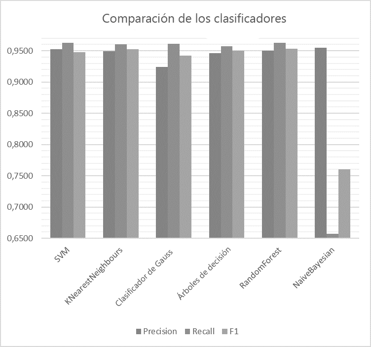

Introducción
En el mundo moderno cada día una gran cantidad de titulares de noticias sobre la actividad del comercio exterior de los estados aparece en Internet; sin embargo, a menudo estos artículos, notas y reseñas se presentan al usuario como una lista general, que se ordena generalmente por tiempo añadido y no permite evaluar la utilidad de la información si corresponde realmente a la categoría que el usuario busca. Por eso existe la necesidad de una clasificación automática de la información del comercio internacional.
1. Relevancia del tema
La clasificación automatizada de información textual relata a la clase de tareas formalizadas difícilmente y actualmente es especialmente pertinente porque la necesidad de automatizar el proceso de recopilación y análisis de información obtenida de Internet que es basado en inteligentes sistemas de software.
El problema de la clasificación automática universal de texto es que no proporciona tal nivel de integridad y precisión de clasificación como clasificadores especializados configurados para una determinada clase de documentos. Por eso es necesario investigar e implementar algoritmos conocidos a menudo.
Ya que la cantidad de información sobre comercio exterior en Internet crece constantemente, la investigación y el desarrollo de un algoritmo para la clasificación automática de textos sobre la información de comercio exterior de los estados es un tema importante.
2. El propósito y objetivos del estudio, los resultados planificados
El objetivo del estudio es desarrollar un algoritmo para la clasificación automatizada de información sobre las actividades de comercio exterior de los estados y su introducción en el sistema de recuperación de información.
Tareas principales:
- análisis de los métodos existentes para la clasificación de información textual en lenguaje natural.
- Análisis de los métodos de recopilación de información en internet.
- Análisis de las etapas de creación del SRI.
- Desarrollo de la arquitectura del modelo de software.
- Desarrollo de un modelo de software del sistema de recuperación de información.
- Desarrollo de algoritmo para la clasificación automatizada de información sobre las actividades de comercio exterior de los estados.
- Evaluación del módulo de clasificación automatizada de información para SRI sobre las actividades de comercio exterior de los estados.
La novedad es en el desarrollo de modelo de software para clasificar la información sobre la actividad de comercio exterior de los estados que es obtenido a partir del análisis de las páginas de Internet.
Se planea que los algoritmos y programas desarrollados formarán una base del sistema de recuperación de información que funcione con información sobre las actividades de comercio exterior de los estados.
3. Revisión de la investigación y desarrollo
En el acceso abierto hay una gran cantidad de estudios sobre el tema de la clasificación automática. Pero no se pudo encontrar estudios sobre la clasificación de la información sobre la actividad de comercio internacional de los estados.
3.1. Revisión de referencias internacionales
En el estudio Clasificación multinivel de los artículos económicos sobre la base de ontologías
[1],
Sergey Vogrinčić y Zoran Bosnik presentan un enfoque para la tarea de categorización automática de documentos en el campo de la economía. Evaluaron la precisión de los modelos probados y concluyeron que todos ellos tienen potencial en uso, y además, basándose en los resultados, revelaron las ventajas de usar grupos complejos de enfoques.
En el artículo El estudio de la categorización de texto en WEKA
[2]
fueron analizados tres algoritmos populares de categorización de texto, a saber, el clasificador ingenuo de Bayes, el árbol de decisión y el método del vector de soporte. Se concluye que el ingenuo clasificador de Bayes se mostró mejor con textos económicos.
El artículo Eficiencia de un conjunto homogéneo de clasificadores para textos turcos e ingleses
[3]
presenta un análisis comparativo del uso de conjuntos homogéneos para la clasificación de textos turcos e ingleses. Las conclusiones muestran la superioridad del conjunto homogéneo Random Forest.
3.2. Revisión de referencias nacionales
En el artículo Análisis de los métodos de clasificación de la información en Internet al resolver las tareas de recuperación de información
[4]
el autor considera varios enfoques para la clasificación de la información y sugiere utilizar un enfoque combinado para aumentar la eficiencia.
El artículo Clasificación automática de documentos de texto utilizando algoritmos de redes neuronales y análisis semántico
[5]
analiza los algoritmos de redes neuronales utilizados en las tareas de clasificación de textos y describe métodos y modelos para el análisis semántico de textos aplicados al problema de mejorar la calidad de la rubricización.
En el artículo Análisis comparativo de algoritmos de clasificación y formas de presentar documentos web
[6]
se consideraron una serie de algoritmos de clasificación y problemas de preprocesamiento de textos. Sobre la base del análisis de los resultados de los experimentos, se propusieron varias de las mejoras para los clasificadores.
3.3. Revisión de referencias locales
En el abstracto de Linkin Viktor Olegovich El estudio del soporte algorítmico del sistema de clasificación intelectual de documentos politémicos de hipertexto
[7]
se analizaron las características de la clasificación de documentos en el caso cuando las clases pueden superponerse y el documento puede asignarse a varias clases.
En el abstracto de Yulia Alexandrovna Tregubova El estudio del método de clasificación de resultados de búsqueda con orientación temática en Internet
[8]
se analizaron los enfoques existentes para aumentar la relevancia de la búsqueda temática al clasificar los resultados de los motores de búsqueda.
4. Revisión y análisis de algoritmos de clasificación binaria para obtener información sobre las actividades del comercio exterior de los estados
Para elegir el algoritmo más efectivo para clasificar textos de comercio internacional, es necesario analizarlos en una muestra específica. La tarea es relevante para los sistemas de recuperación de información destinados a buscar y procesar información sobre el comercio internacional. La sección proporciona una descripción general de los algoritmos de clasificación de información y su comparación cuando la trabaja con datos sobre la actividad económica de los estados en el comercio internacional.
4.1. Selección de términos para clasificación
Cualquier clasificación se realiza sobre la base de algún signo. Para clasificar el texto, en primer lugar es necesario determinar los valores de las características seleccionadas para este texto. Hasta la fecha, la medida TF-IDF es una de las más efectivos medidas para determinar automáticamente los signos requeridos
[9].
TF-IDF es una medida estadística que se utiliza para evaluar el significado de una palabra en un documento que forma parte de un conjunto de los documentos. El peso de la palabra es proporcional a la frecuencia de su uso en el documento e inversamente proporcional a la frecuencia de su uso en todo el conjunto. El número de signos se eligió arbitrariamente pero, al elegirlo, el cambio de la métrica f1 se tuvo en cuenta en tasas más altas de este parámetro.
4.2. Selección del material para clasificación
Para probar los algoritmos de clasificación, se decidió utilizar un conjunto de artículos clasificados de Reuters en la cantidad de 10788 piezas, de las cuales 7769 caen en el conjunto de entrenamiento y 3019 en la muestra analizada. Los artículos se clasifican en 90 categorías. En el estudio se implementó un clasificador binario de artículos sobre comercio internacional, por lo que las 89 categorías restantes se marcaron como "otras". Los siguientes algoritmos fueron elegidos como clasificadores en el estudio: SVM (máquina de vectores de soporte), KNearestNeighbors, clasificador de Gauss, árboles de decisión, clasificador RandomForest y clasificador Naive Bayes.
4.3. Cálculo de métricas para algoritmos
Para permitir la comparación de los algoritmos, las métricas de precisión de completitud y de F1 medida fueron calculadas para cada uno de los algoritmos con diferentes variantes de sus parámetros.
4.3.1. SVM
SVM (máquina de vectores de soporte) es un conjunto de algoritmos de clasificación que transmiten los vectores resultantes de origen en un espacio de dimensión superior y encuentran un hiperplano que divide las clases presentadas
[10].
En el estudio se probó este clasificador en varios indicadores entrados del núcleo, gamma y el parámetro de penalización. Al mismo tiempo, se calcularon métricas de precisión, integridad y métrica f1. Los resultados se muestran en la tabla 1.
Tabla 1 - Métricas para el clasificador SVC
| Parámetros |
Precision |
Recall |
F1 |
|
kernel = "linear",
C = 0.025
|
0.924 |
0.9612 |
0.9423 |
| gamma = 2, C = 1 |
0.9578 |
0.9626 |
0.946 |
| gamma = 3, C = 1 |
0.9522 |
0.9626 |
0.9477 |
De acuerdo con los datos obtenidos, el tercer valor es óptimo según F1 - medida. Más comparación utilizará datos de estos parámetros.
4.3.2. KNearestNeighbours
El algoritmo de vecinos más cercanos (kNN) se basa en la regla de que el objeto de prueba con su conjunto de características pertenece a la clase a la que pertenece la mayoría de sus k vecinos más cercanos
[11].
En el estudio este clasificador se probó en varios indicadores entrados k, como 3, 5 y 10 vecinos. Al mismo tiempo, se calcularon métricas de precisión, integridad y métrica f1. Los resultados se muestran en la tabla 2.
Tabla 2 - Métricas para el clasificador kNN
| k |
Precision |
Recall |
F1 |
| 3 |
0.946 |
0.9559 |
0.95 |
| 5 |
0.9494 |
0.9603 |
0.9527 |
| 10 |
0.9528 |
0.9566 |
0.9498 |
Según los datos obtenidos, el número de vecinos 5 es óptimo según la medida F1. En la comparación adicional se utilizarán los datos de este parámetro.
4.3.3. Clasificador de Gauss
La idea principal del clasificador gaussiano es en el supuesto de lo que la función de probabilidad (conjunto de entrenamiento) es conocida para cada clase y es igual a la densidad de la distribución normal gaussiana
[12].
En el estudio se probó este clasificador en varios indicadores entrados de la función de base radial. Al mismo tiempo, se calcularon métricas de precisión, integridad y métrica f1. Los resultados se muestran en la tabla 3.
Tabla 3 - Métricas para el clasificador de Gauss
| RBF(x) |
Precision |
Recall |
F1 |
| 1.0 |
0.924 |
0.9612 |
0.9423 |
| 0.5 |
0.924 |
0.9612 |
0.9423 |
| 1.5 |
0.924 |
0.9612 |
0.9423 |
Según los datos obtenidos, el valor RBF tiene poco efecto en los indicadores según la medida F1.
4.3.4. Árboles de decisión
Un árbol de decisión es un clasificador que construye una estructura en los datos de entrenamiento, cuyos nodos son los atributos de las diferencias, los atributos de la función objetivo se escriben en las hojas y el conjunto necesario de atributos está en los bordes. La tarea del árbol de decisión es crear un modelo que predice el valor de la función objetivo basándose en varias entradas
[13].
En el estudio se probó este clasificador en varios indicadores del argumento entrado de la profundidad máxima del árbol. Al mismo tiempo, se calcularon métricas de precisión, integridad y métrica f1. Los resultados se muestran en la tabla 4.
Tabla 4 - Métricas para el árbol de decisión
| max |
Precision |
Recall |
F1 |
| 5 |
0.9458 |
0.9573 |
0.9501 |
| 10 |
0.9421 |
0.9523 |
0.9465 |
| 15 |
0.943 |
0.95 |
0.9462 |
Según los datos obtenidos, la profundidad del árbol 5 es óptima según la medida F1. En la comparación adicional se utilizarán los datos de este parámetro.
4.3.5. Clasificador RandomForest
RandomForest es un algoritmo de aprendizaje automático que utiliza un conjunto homogéneo de árboles de decisión. La idea principal es utilizar un gran conjunto de árboles de decisión lo que debido a su gran número mejora el resultado de la clasificación
[14].
En el estudio se probó este clasificador en varios indicadores entrados del argumento de la profundidad máxima del árbol. Al mismo tiempo, se calcularon métricas de precisión, integridad y métrica f1. Los resultados se muestran en la tabla 5.
Tabla 5 - Métricas para RandomForest
| max |
Precision |
Recall |
F1 |
| 5 |
0.924 |
0.9502 |
0.9487 |
| 10 |
0.9606 |
0.9626 |
0.9612 |
| 15 |
0.9419 |
0.953 |
0.9527 |
Según los datos obtenidos, la profundidad del árbol 10 es óptima según la medida F1. En la comparación adicional se utilizarán los datos de este parámetro.
4.3.6. Clasificador bayesiano ingenuo
La base del ingenuo clasificador bayesiano es el teorema de Bayes. Este clasificador se ha convertido en uno de los métodos de clasificación universales estándar. La ventaja de este clasificador es una cantidad relativamente pequeña de datos necesarios para la capacitación
[15].
En el estudio se probó este clasificador. Al mismo tiempo, se calcularon métricas de precisión, integridad y métrica f1. Los resultados se muestran en la tabla 6.
Tabla 6 - Métricas para NaiveBayesian
| Precision |
Recall |
F1 |
| 0.9551 |
0.6568 |
0.7602 |
4.4. Comparación de los clasificadores
Después de las pruebas, se realizó un análisis comparativo de los clasificadores sobre la precisión, la integridad y la medida f1
[16]. Es porque se utilizó una colección grande suficientemente de los documentos de capacitación, así como a través del uso del algoritmo de selección de características TF-IDF, los resultados obtenidos difieren ligeramente y todos ellos tienen buenos indicadores de reconocimiento de texto con información de comercio internacional. La única excepción es el ingenuo algoritmo bayesiano, que mostró el nivel de F1 en 0.7602, que no es un resultado satisfactorio para la clasificación binaria. Los resultados de la comparación se presentan en la Figura 1. Según una estimación ponderada, el conjunto homogéneo RandomForest con la profundidad del árbol 10 se mostró de la mejor manera.

Figura 1 - Comparación de clasificadores
(animación: 10 cuadros, 10 ciclos de repetición, 53 kilobytes)
Conclusiones
Se analizaron algoritmos de clasificación como SVM (máquina de vectores de soporte), KNearestNeighbors, clasificador de Gauss, árboles de decisión, clasificador RandomForest y clasificador Naive Bayes. Se implementó un algoritmo de selección y se seleccionaron los criterios de clasificación TF-IDF. Los algoritmos con diferentes parámetros se probaron para el conjunto de entrenamiento y los datos de prueba, los parámetros óptimos para cada algoritmo se determinaron según la estimación de la medida F1. Los algoritmos se compararon comparando el valor óptimo de la medida F1, la integridad y la precisión de cada uno de ellos. El conjunto homogéneo RandomForest se estableció como el clasificador óptimo para la clasificación binaria de información de comercio internacional. Los resultados insatisfactorios de clasificación por el ingenuo clasificador de Bayes se establecieron.
Referencias
-
1. Sergeja Vogrinčič1, Zoran Bosnić, Ontology-based multi-label classification of economic articles. Computer Science and Information Systems, 2011 [fuente en la biblioteca]
-
2. Li Dan, and Liu Lihua, Zhang Zhaoxin, Research of Text Categorization on WEKA. Third International Conference on Intelligent System Design and Engineering Applications, 2013 [fuente en la biblioteca]
-
3. Zeynep Hilal Kilimci, Selim Akyokus, Sevinc Ilhan Omurca, The Effectiveness of Homogenous Ensemble Classifiers for Turkish and English Texts. International Symposium on Innovations in Intelligent Systems and Applications (INISTA), 2016 [fuente en la biblioteca]
-
4. Мэн Цинань, Анализ методов классификации информации в интернете при решении задач информационного поиска. Научный журнал
Моделирование, оптимизация и информационные технологии
№2(13), 2016
-
5. Андреев А.М., Березкин Д.В., Морозов В.В., Симаков К.В., Автоматическая классификация текстовых документов с использованием нейросетевых алгоритмов и семантического анализа. Всероссийская Научная Конференция, 2003 [fuente en la biblioteca]
-
6. Максаков Алексей, Сравнительный анализ алгоритмов классификации и способов представления Web-документов. Третий российский семинар по оценке методов информационного поиска, 2005 [fuente en la biblioteca]
-
7. Линкин В.О., Исследование алгоритмического обеспечения интеллектуальной системы классификации политематических гипертекстовых документов, 2013 [Электронный ресурс]. – Режим доступа:http://masters.donntu.org/2013/fknt/linkin/diss/index.htm
-
8. Трегубова Е.А., Исследование метода тематически ориентированной классификации результатов поиска в Интернет, 2014 [Электронный ресурс]. – Режим доступа:http://masters.donntu.org/2014/fknt/tregubova/diss/index.htm
-
9. Salton, G. and Buckley, C. Term-weighting approaches in automatic text retrieval. Information Processing & Management, 1988
-
10. Nello Cristianini, John Shawe-Taylor An Introduction to Support Vector Machines and Other Kernel-based Learning Methods. — Cambridge University Press, 2000
-
11. Brett Lantz, Machine Learning with R. Pack Publishing. Birmongham-Mumbai, 2013
-
12. Breiman, Leo; Friedman, J.H., Olshen, R.A., & Stone, C.J. Classification and regression trees. Monterey, CA: Wadsworth & Brooks/Cole Advanced Books & Software, 1984
-
13. Hastie, T., Tibshirani R., Friedman J. Chapter 15. Random Forests // The Elements of Statistical Learning: Data Mining, Inference, and Prediction. — 2nd ed. — Springer-Verlag, 2009. — 746 с.
-
14. Hand, DJ, & Yu, K. «Idiot’s Bayes — not so stupid after all?» International Statistical Review, 2001. - с 385—399.
-
15. 7. Е.И. Большакова Автоматическая обработка текстов на естественном языке и компьютерная лингвистика: учеб. пособие / Большакова Е.И., Клышинский Э.С., Ландэ Д.В., Носков А.А., Пескова О.В., Ягунова Е.В. — М.: МИЭМ, 2011. — 272 с.
-
16. Титаренко М.Г., Коломойцева И.А. Обзор и анализ алгоритмов для осуществления бинарной классификации информации о внешнеторговой деятельности государств // Материалы международной научно-практическаой конференции «Программная инженерия: методы и технологии разработки информационновычислительных систем» (ПИИВС-2018) – Донецк: ДонНТУ, 2018 [fuente en la biblioteca (ruso)][fuente en la biblioteca (inglés)]